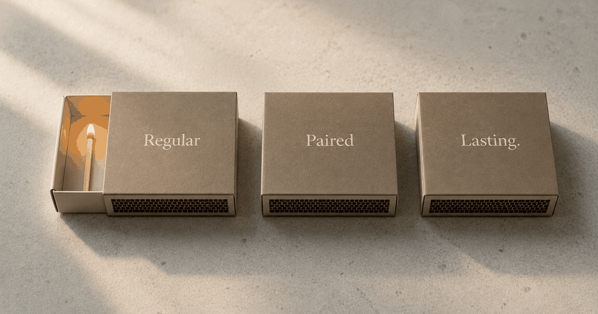

If you are a new parent choosing between these three apps, here is the short version: they are not interchangeable. Regular is built specifically for the postpartum year and works even if only one partner uses it. Paired is a general connection app built around daily questions and games. Lasting is structured, Gottman-based relationship education. If you are a new dad who feels disconnected and wants one concrete move tonight, Regular is the one designed for your exact situation — but the honest answer depends on what you are actually trying to fix.
How the three apps differ
Regular, Paired and Lasting approach the "couples app" category from three completely different angles, so the real question is which angle fits the first year with a baby. Regular reads your couple's context and hands you one small action for tonight. Paired sends a daily question or game to keep a light habit alive. Lasting runs a structured, therapy-style curriculum you work through together. All three are legitimate — they just answer different needs.
| Regular | Paired | Lasting | |
|---|---|---|---|
| Built for | New parents — the postpartum year, specifically | All couples — general connection | All couples — relationship education |
| How it works | Reads your context (sleep, cycle, mood) → one small move tonight, grounded in Gottman & EFT | Daily questions, quizzes & games | Structured Gottman-based sessions & exercises |
| Best for | New dads/parents feeling disconnected in year one; works solo for one partner | Steady couples wanting a light daily-question habit | Couples with time and motivation for a guided program |
| Price | Free to start | Paid subscription | Paid subscription |
Notice the two rows that matter most in the newborn fog: who it is built for and whether it works when only one of you has the energy to open an app. That is where these three separate. For the wider set of options — Coral for the physical side, the free Gottman card decks, coaching apps and more — see our roundup of the 7 best apps for couples after a baby. This piece stays focused on the three most people are actually deciding between.
Regular — built for the postpartum year
Regular is the only one of the three designed specifically for the first year after a baby, and the only one that works when just one partner is engaged. It was built around a narrow problem: the first year is when many couples lose each other quietly — not dramatically, just gradually, through exhaustion and logistics and running out of things to say that are not about the baby. Instead of a generic prompt, it reads your situation — where she is in her cycle, how much you have both slept, what has been tense — and hands you one small thing to do tonight. Not a conversation opener that might go sideways, not a homework assignment that needs thirty uninterrupted minutes. One move.
The part that matters most for new dads: it works even if your partner is not using it. She does not have to download anything or engage with an app. You get context about what she is likely experiencing and a concrete action you can take — which is why reconnecting with your wife after a baby often starts with one small, well-timed move rather than a big talk neither of you has the energy for.
Best for: new parents in the first 12–18 months; dads who feel like roommates or a third wheel and want one low-friction move tonight. · Trade-off: iOS-first, and not the tool if you specifically want a structured, multi-week curriculum.
Paired — best of the three for a light daily habit
Paired is the strongest of the three if your relationship is fundamentally okay and you want a light daily ritual to stay connected. It is the category's most-downloaded app for a reason: the daily questions are genuinely interesting, and the quizzes create small "I didn't know that about you" moments. For couples in a good place who want to keep it that way, it does its job well.
For new parents specifically, the limits are honest ones: it assumes both partners are engaged, and its content is not calibrated to the postpartum context. You get the same prompt whether your baby is six weeks old or you have been together for a decade. It does not know you just had a brutal week, that she is touched out, or that you have not had a real conversation in nine days. That is not a flaw — it is simply a general tool, not a postpartum one.
Best for: steady couples who want a simple daily prompt and are not after postpartum-specific support. · Trade-off: generic content, and it needs both partners engaged.
Lasting — best of the three for structured relationship education
Lasting is the pick of the three if you both have the time and motivation for a guided, Gottman-based program. It is closer to a structured marriage-education course than a quick daily app — sessions, exercises and a curriculum built on Gottman Institute research (the same lab behind the 67% figure above), designed to help couples communicate and understand each other more deeply. For couples who genuinely want to do the work together, it is excellent.
The catch is the "if." In the first year after a baby, many couples are running on four hours of sleep, and the capacity for structured, intentional relationship work is exactly what tends to vanish. Lasting is built for a level of motivation you may not have right now — and that is not a knock on it. It is a different tool for a different moment.
"Men are comfortable supporting their pregnant partners, but feel less sure of what to do — and maybe even irrelevant — once the baby comes." Sandra Schoppe-Sullivan, PhD — Ohio State University
The disconnection dads feel in the first year is rarely about lacking motivation to improve the relationship. It is about lacking a clear, low-friction way to act on it. That is where the format of the app matters as much as the content.
Best for: couples ready to invest 10–15 minutes a session in a structured program together. · Trade-off: it asks for time and effort that the newborn year rarely leaves spare.
So which one should you pick?
The best app is the one you will actually open on a Wednesday at 10pm — and which one that is depends entirely on your situation. If your relationship is generally strong and you both have bandwidth for a daily practice, Paired gives you good raw material. If you want to go deep on communication together and can commit ten minutes a session, Lasting is worth the subscription. If you are a dad in year one — feeling disconnected, short on time, unsure your partner wants to engage with an app right now — Regular was built for exactly that.
One thing none of the three replaces is the honest realization that reading your partner's signals, in real time, from inside your own fatigue, is genuinely hard. That is not a failure of motivation; it is a structural problem — and it is worth asking whether an app that reads context can help a real relationship rather than compete with it. A third perspective — something outside your own exhausted head — is where the actual leverage is.
Frequently asked questions
Is Regular better than Paired for couples with a new baby?
For couples navigating the postpartum year, Regular is the one of the three built specifically for that scenario — it reads your context (sleep, cycle, mood) and gives you one small action tonight, and it works even if only one partner uses it. Paired is a general couples app with daily questions and games; it works well for general connection but was not designed for the fog of early parenthood.
Is Lasting a good couples app after having a baby?
Lasting uses Gottman-based sessions and structured exercises, which work well for couples who have the time and motivation for 10–15 minute sessions together. For many new parents, that is a high bar in the first year. It is strong for long-term relationship education but less suited to the survival mode of early parenthood.
What makes Regular different from Paired and Lasting?
Regular is the only one of the three built specifically for new parents. Rather than generic daily games or a therapy-style curriculum, it reads your couple's context — including where you are in the postpartum timeline — and gives you one small, concrete action for tonight. It also works for one partner even if the other is not using the app.
Can I use a couples app if my partner doesn't want to participate?
Yes — Regular works for one partner, which is the main practical difference from Paired and Lasting, both of which assume two engaged users. Many dads use Regular solo, especially in the early months. It gives you context about what your partner is likely experiencing and one move to try tonight without requiring them to log in.
Which of these three apps should I pick?
Pick Regular if you are a new parent — especially a dad who feels disconnected and wants one low-friction move tonight. Pick Paired if your relationship is steady and you want a light daily-question habit. Pick Lasting if you both have time and motivation for a structured, Gottman-based program. For the full field beyond these three, see our roundup of the 7 best apps for couples after a baby.
Keep readingThe 7 best apps for couples after having a baby (2026) · How to reconnect with your wife after having a baby · Does using an AI companion hurt your real relationships?

Co-founder of Regular. Writes about relationships, parenthood, and the science of how couples stay close after a baby.
About Regular — the relationship app for new dads, built by a small team of parents who needed it themselves. Small, science-backed moves with your partner, not big talks.